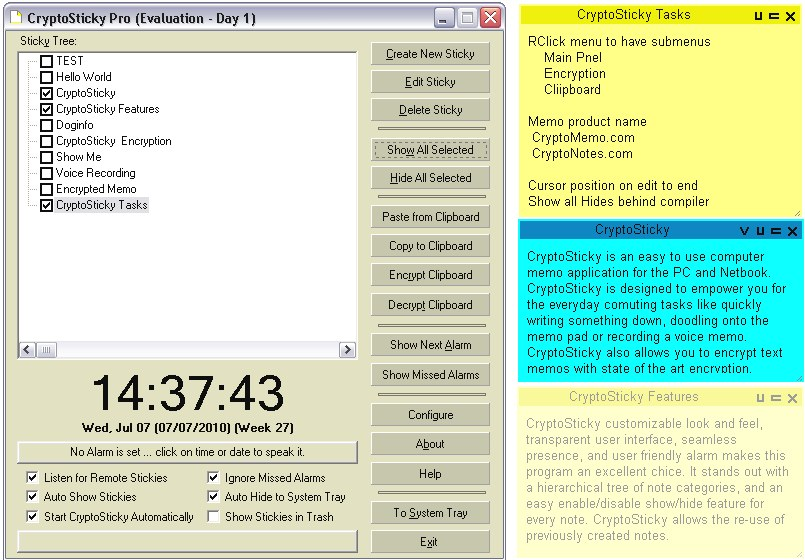

CryptoSticky Advanced Usage CryptoSticky, being a
newly developed application, is full of exciting features. The
transparency eye candy is just the tip of the iceberg. For instance,
CryptoSticky comes with a spell checker, that is 'tall dark, and
silent'.
The spell checker operates while you type, and only spell checks
the current line. A subtle 'squiggly' underlines the word that
CryptoSticky finds out of order. The spell checker comes with a huge
and
powerful suggestion facility. Right clicking on any word will deliver
an extensive but appropriate list.
CryptoSticky has a network broadcast facility. For instance, one can connect a laptop the network, start CryptoSticky, and the laptop is ready to receive network broadcasts. Broadcasting from any computer on the network, the laptop will receive an update of all the stickies. Naturally, this works in the opposite direction as well. Broadcasting from the laptop, updates all stickies on the currently running CryptoSticky installations. CryptoSticky sound recording. An easy to use sound recorder and sound editor is at the heart of the recording facility. One can edit the sound after recording it, discarding undesired portions, unwanted silences, or misspoken parts. The sound editor is very intuitive, one can use it without extensive effort and learning curve. CryptoSticky Doodle. One can draw on the surface of the sticky with a mouse. The drawing facility is simple, effective and to the point. No more 'napkin' drawing when one has a laptop or a tablet at hand.

Editing conflicts.
It is possible for two people to edit
the same note. If that happens, CryptoSticky detects the situation, and
creates a sticky with a new title.The new title is an enumeration of
the original, with the suffix #1 #2 etc ... Because both the new
(edited) memo
and the old (conflicting) memo is presented to the user, allowing a
choice between the old content, new content, or
manual
merging of the two contents.
Deletion conflicts. Memos are not deleted, rather, they are moved to a 'Deleted' memo path. If a user deletes a memo, it can be retrieved from the 'Deleted' folder. Naturally, memos that are deleted from the 'Deleted' memo path are deleted permanently. Hierarchical list of memos. Most things in nature are arranged in a tree like structure. So are memos in CryptoSticky. In your memos, take advantage of the flexibility of the tree structure. For example, one can create folders like 'Work' 'Play' 'Fun' 'Personal' and arrange memos accordingly. Copyright © by RobotMonkeySoftware |